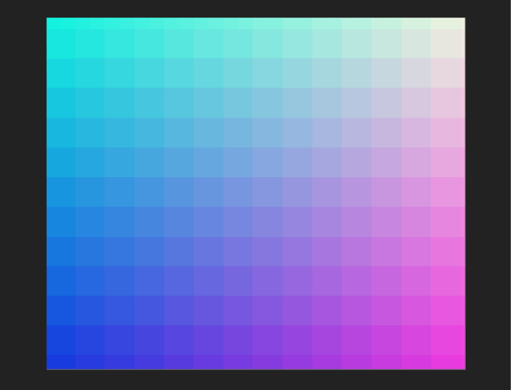

A brief introduction to Shaders
Welcome to Shaderland!
How do they work?
Now you might be thinking, why does this shader thing run on our GPUs? Why not make them work on CPUs like most normal programs do? That has something to do with what I had said earlier regarding the way these things work. These tiny little programs run for every single pixel on your screen. So if you’re using a 1080x720 monitor, the shader runs 777,600 times. But wait, that’s not such a large number in terms of computing things, right? Yes but these shader programs run every single frame for every single pixel since they need to keep rendering something on the screen based on your monitor’s refresh rate. Which means it has to perform those 777,600 calculations every single frame and if we’re expecting a performance of at least 30 frames per second. That’s 23,328,000 calculations every second. Which is obviously insane. This is where the parallel processing power of a GPU comes in. You can think of it as a large chunk of cheese passing through a surface with multiple holes in it, like a cheese grater as compared to passing through a surface with a single hole in it, which would be the case of a CPU. Because of this parallel architecture which makes use of a large number of tiny microprocessors, all the 777,600 calculations can easily pass through it 30 times over in a second.
One more important thing to remember is that since these shader programs run in parallel, each individual pixel has no idea what the other pixel is up to which means that each thread of the program is clueless about what’s going on with the other threads. This means you cannot check for the state of the (n+1)th or the (n-1)th pixel which some of you might have done before. Also with each new wave in every frame, the GPU gets filled in with new information which makes it impossible to know what it was doing before. The parallel computation capability of shaders makes it a very powerful tool but it is this very same power that translates into its notorious complexity.
Types and Flavours
There are a number of shading languages out there with GLSL (OpenGL Shading Language) and Cg/HLSL (High Level Shading Language) being some of the most popular ones. Based on what the shader program does, we usually classify them into two types-
- Vertex Shaders and
- Fragment Shaders
A Vertex shader, as the name suggests, takes in positions of certain objects that are to be drawn and converts them into the appropriate 3D coordinates for your screen whereas the Fragment shader is responsible to determine the final colour of each individual pixel on the screen. We’ll have a look about these in depth in a future post. Again there are a number of steps before the shaders are invoked which we’ll go through sometime in the future. Or if you’re adventurous enough you can have a look at the rasterization pipeline for yourself.There’s one final concept to note before we move on to actually seeing a shader program and that is a uniform. Uniforms are inputs to the shader program from the CPU.These uniforms cannot be modified and are sent by the CPU to all threads running on the GPU. Hence, all the inputs from the CPU are the same for all threads from where we get the name ‘uniform’. Some common uniforms passed on to these programs are the screen resolution, mouse position and time.
Okay then, enough talk. Let’s have a look at some code.
#ifdef GL_ES
precision mediump float;
#endif
uniform vec2 u_resolution;
uniform vec2 u_mouse;
uniform float u_time;
void main() {
gl_FragColor = vec4(1.0,0.0,0.0,1.0);
}

The lines between ifdef and endif sets the precision value of a float to medium precision if GL_ES is defined, which is true in the case of mobile and browsers. We can go for lowp or highp precisions for lower and higher precisions respectively if we wish to do so.
Next are the uniforms which are passed into the shader program. They are of the type vec2 which is a 2 dimensional vector of floats which is basically a group of two float values (x,y). You can think of them as tuples or just a group of values. We also have vec3 and vec4 types which is basically a group of 3 floats and a group of 4 floats.
Now we come to the main function. The gl_FragColor is a reserved variable which outputs the final color onto the screen which in this case is a vec4 having the red, green, blue and alpha channels as its arguments. The channel values are floats that range between 0 and 1. Hence, the red is set to 1, blue and green to zero and the alpha to 1 as well which displays a solid red color onto the screen.
We could make this program a little more interesting by animating it.
#ifdef GL_ES
precision mediump float;
#endif
uniform vec2 u_resolution;
uniform vec2 u_mouse;
uniform float u_time;
void main() {
vec2 st = vec2(0.0,0.0);
st.x = gl_FragCoord.x/u_resolution.x;
st.y = gl_FragCoord.y/u_resolution.y;
gl_FragColor = vec4(st.x,st.y,abs(sin(u_time)),1.0);
}
After adding in the sin wave to modulate the green channel over time, we get this sort of transitioning animation:

Here, gl_FragCoord is another reserved variable which stores the coordinates of each individual screen pixel and is usually the output of a vertex shader. We divide it by the resolution since we want to obtain colour values between 0 and 1 as you can see in the final line of the program, this process is called normalization and the coordinates that range from 0 to 1 are called normalized coordinates. We are altering the green channel with the help of a sin() function which results in the transitioning effect.Some Examples
So far we have seen the absolute baby basics of how shaders work and what they are. When you further add in layers of complexity and model how the pixels behave, you can come up with some impressive pattern like structures which we shall explore sometime in the future. You can plot precise mathematical formulas to draw curved surfaces or use a color shift to enhance the image quality or add certain effects to the display, such as a Gaussian blur. Shaders can also be used to manipulate lighting conditions or add shadows to a scene, which involves some knowledge of physics to a certain extent. Shaders are used extensively in video games, animated movies, vehicle renders, etc. if we’re looking at the most common use case. Basically if you need to render a complex model onto the screen, you’re most likely to use a shader.


They do tend to get increasingly complex as you keep on adding more details but once you get a good grasp on the ideas of space, time and colours, it’ll be a fun place to let your imagination flow. I shall sign off here and hope to cover some more shader stuff in the future, possibly covering pattern drawings with an example of maybe Truchet tiling in the future. In the meantime you can have a look at some of these wonderful works of art created using shaders.


Links for the above images:
- Seascape: https://www.shadertoy.com/view/Ms2SD1
- Fractal Land: https://www.shadertoy.com/view/XsBXWt
- Rainier mood: https://www.shadertoy.com/view/ldfyzl
- Noise Contour: https://www.shadertoy.com/view/MscSzf
- Mandelbulb: https://www.shadertoy.com/view/MdXSWn
- Fractal pyramid: https://www.shadertoy.com/view/tsXBzS
- Selfie girl: https://www.shadertoy.com/view/WsSBzh
- Perspex Web Lattice: https://www.shadertoy.com/view/Mld3Rn